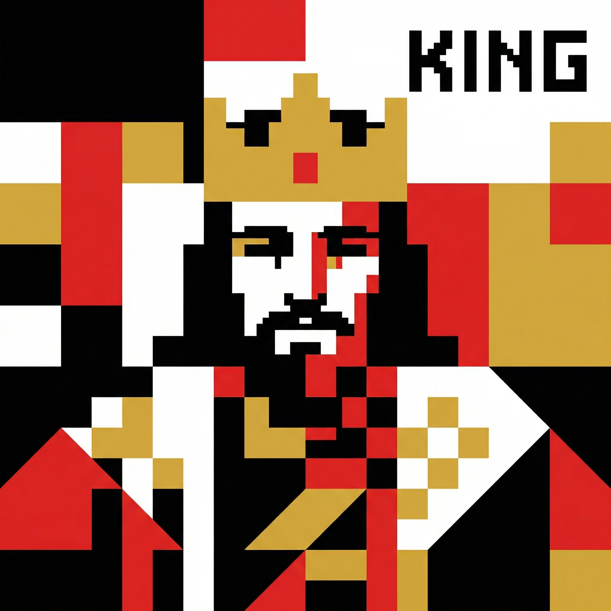
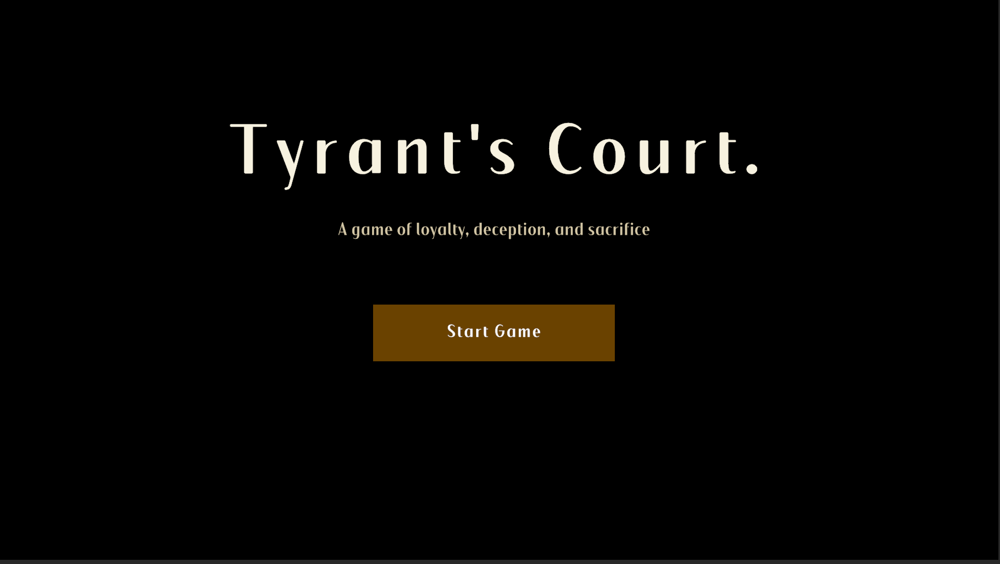

初版
看较早的版本：更多系统同时出现，包括直接互动。这不是现行规则。
系统设计与试玩驱动的迭代
一款关于信息、暴露与共享风险的卡牌原型。现行版本取消了直接攻击。玩家靠持有证据获得优势，也会因为证据暴露而承担风险。

| 项目类型 | 个人 |
|---|---|
| 创建背景 | 课程项目 |
| 职责 | 独立设计师 |
| 时间 | 2026.02 – 2026.04 |
| 工具 | Unity 6 |
| 形式 | 可玩原型 |
| 当前状态 | 两个本地可玩原型：初版与修改版 |
| 成果 | 下面两个原型，以及这份迭代记录 |
下面的视频是本地版本。页面里的试玩区是这个原型的单人网页版，不是在线多人。
这里写的是修改后的版本。后面的生命值交换、直接攻击、能力抽取，以及只有君主能使用的嫌疑牌，都属于初版。

这是《朝堂之上》的网页版。点进游戏后，按开始界面上的操作来玩。它在这个网站的浏览器里运行。如果只是把网页文件下载到文件夹里双击打开，这个网页版无法启动。
看较早的版本：更多系统同时出现，包括直接互动。这不是现行规则。
看证据、暴露，以及没有直接攻击的玩法。两段视频都是我为这个个人课程项目做的本地 Unity 原型。
《朝堂之上》是一款多人卡牌博弈游戏，核心体验围绕玩家互动、隐藏身份与策略决策展开。
玩家通过卡牌、能力与共享系统进行博弈。整体玩法强调玩家之间的张力、信息的不确定性与对时机的判断。玩家需要观察他人、管理风险，并根据局势变化随时调整行动。
游戏建立在玩家间的冲突、间接互动，以及“获取力量”与“承担风险”之间的取舍之上。
这一节只描述第一版。初版设计把多个系统整合进同一个体验中：带有不同胜利条件的隐藏身份、对局中使用的卡牌系统，以及基于“证据”与“嫌疑”的资源系统。
一个关键机制在开局之前就已出现。准备阶段中，除“君主”以外的所有玩家都会从共享能力池中挑选能力。每位玩家可以选择多个能力，在对局中获得强大的优势。
但每选择一项能力，也会同时给君主带来增益，例如额外抽牌或获得额外效果。由此形成一种共享代价机制：玩家在变强的同时，也在壮大共同的威胁。
这一准备阶段带来了一个早期抉择：在游戏开始前，玩家必须权衡自己要拿走多少力量，又愿意让君主获得多少优势。
准备阶段结束后，游戏进入以卡牌为核心的互动环节。玩家在自己的回合中抽牌、使用能力，并以其他玩家为目标采取行动。
部分卡牌会产生“证据”，既可以给自己，也可以给指定的目标玩家。证据不属于任何阵营，是一种可以灵活运用的资源：玩家可以消耗证据要挟另一名玩家并与其交换生命值，也可以把它当作防御牌，抵消一次来袭的攻击。
为了防止证据过强，系统引入了“嫌疑”。嫌疑是一张只有君主才能使用的卡牌，打出后会影响场上所有玩家：每位玩家失去与手中证据牌数量相等的生命值。于是，手握的证据越多，力量越大，处境也越危险。
所有玩家开局时都有一定的基础生命值，可能因攻击或系统效果被淘汰。生命值归零的玩家将退出游戏，但出局并不等于直接失败——最终结果取决于剩余玩家是否达成各自身份的胜利条件。
第一轮测试中，不同玩家身上反复出现同一个问题：难点不在于难度，而在于理解。
玩家很难弄清自己的目标，也不理解能力、卡牌与资源之间的关系。他们大部分时间都花在阅读卡牌文字上，而不是做决策；在对局前期，策略思考始终没有出现。
玩家形容这段体验“混乱、让人应接不暇”，仿佛需要预先掌握很多知识才能上手。他们感受到的不是紧张感，而是不知道该做什么的茫然。
问题出在系统的引入方式上。
玩家需要同时消化隐藏身份、能力效果、卡牌互动和资源系统，认知负荷过高。
由于玩家无法判断什么才是重要的，也就无法做出有意义的决策。原本设想的策略感与紧张感，被困惑取代了。
设计方向转向简化与清晰。
系统被重构为聚焦一个核心机制：证据与嫌疑之间的关系。其他系统被删减或延后引入，让玩家先理解一个核心概念。
这一调整旨在减少困惑，帮助玩家更早地投入到系统之中。
通过减少对局前期同时生效的机制数量，游戏结构得到简化；牌池也被缩减，以突出核心互动。
同时，通过多套对局设置，引入了循序渐进的学习过程。
第一套设置中，玩家在没有惩罚的情况下接触证据，了解它作为隐藏力量如何运作。
第二套设置引入嫌疑，让持有证据开始伴随风险。
第三套设置中，两个系统在更高的压力下相互作用，要求玩家考虑时机与决策。
这种方式让玩家通过游玩来学习，而不是依赖讲解。
完成这些调整后，进行了第二轮测试。
玩家理解系统的速度明显加快，也更早开始做出决策。机制之间的关系更加清晰，玩家的投入度也更高。
但新的问题随之出现：一些玩家觉得游戏缺乏鲜明的特色；部分回合显得被动，玩家之间没有形成强烈的互动。
第二个问题与参与感和游戏特色有关。
虽然玩家理解了系统，但体验仍和其他卡牌游戏大同小异，核心机制还不足以定义这款游戏。
设计中包含多个系统：能力系统、卡牌系统，以及证据与嫌疑系统。每个系统单独看都很有趣，却没有融合成一个聚焦的玩法体验。
因此，整体体验显得零散。玩家说不清这款游戏到底在玩什么，也没有一个统领玩法的核心机制。
缺乏焦点也影响了玩家的投入度：许多行动更像是被动应对，而非主动谋划，玩家对自己的决策缺乏掌控感。
对于一款单局时长较短的卡牌游戏来说，这让体验缺少辨识度，也更难让玩家持续投入。
设计方向再次调整，转向强化核心系统。
游戏围绕“证据”这一核心机制重新构建：取消玩家之间的直接伤害，所有后果都交由共享系统结算。
这一调整把重心从直接对抗转向以信息为核心的互动。
新版本取消了玩家之间的直接攻击，所有互动都通过证据与嫌疑系统进行。
玩家通过生成、揭露和管理证据来影响局势。每轮结束时，系统会结算证据，并根据玩家的暴露程度施加惩罚。
核心玩法：
玩家通过积累证据获得力量，但也更容易受到惩罚。每一个决定都会同时放大优势与风险。
由此形成以信息、时机和风险控制为核心的玩法结构：玩家比拼的是如何管理自身的暴露，而不是直接造成伤害。
| 阶段 | 观察到的问题 | 设计决定 | 实际修改 | 结果或剩余问题 |
|---|---|---|---|---|
| 初版 | 玩家看不清身份、能力、卡牌和证据如何连在一起。时间花在读牌上。 | 先只教一个关系：证据与嫌疑。 | 减少前期机制，缩小牌池，并用三个逐步加入风险的局面来教学。 | 玩家可以开始做决定。游戏仍然显得分散。 |
| 第一次修改 | 有些回合很被动，玩家也说不清这款游戏在做什么。 | 让证据成为唯一中心，并取消直接伤害。 | 取消了直接攻击。后果改到每轮结束时的暴露结算。 | 辨识度更清楚。牌池、安静的回合，以及随机抽牌仍然是限制。 |
| 修改版 | 第二轮之后，这些限制还在。 | 把暴露的取舍保留为现行设计。 | 可玩的修改版就是第二段视频里的版本。 | 玩家觉得它更集中。深度、安静回合，以及面对随机抽牌的规划仍然开放。 |
经过这轮迭代，游戏形成了更鲜明的特色。玩家认为系统更聚焦、更容易理解，核心机制在对局中也更加突出。
目前仍存在一些局限：牌池仍然有限，削弱了策略深度；部分回合缺乏强烈的互动；随机抽牌也让长期规划变得困难。
这个项目展示了玩家反馈如何引导设计决策。
第一轮迭代通过降低复杂度提升了清晰度；第二轮迭代通过聚焦核心机制提升了参与感。
两次调整都基于玩家的真实体验，分别针对理解与互动中的具体问题。
在今后的项目中，系统会以更循序渐进的方式引入，并在组合之前先单独测试。
玩家反馈不仅会用来修正问题，也会用来指引设计的方向。
当反馈被当作“指引方向的证据”而非“错误清单”时，以玩家为中心的设计才最有效。清晰度与参与感的提升，必须建立在可观察的玩家行为与机制响应之间的直接联系上。